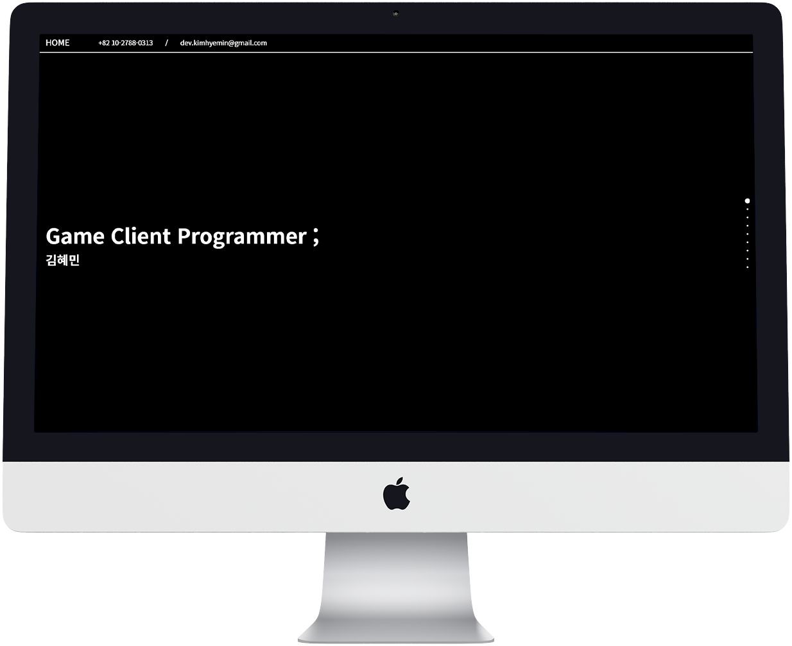

안녕하세요.준비된 게임 클라이언트 프로그래머, 김혜민입니다.
+ 높은 수준의 프로그래밍 능력
1개의 직접 기획한 게임 데모 프로젝트와, 개발 능력을 증명할 수 있는 4개의 웹 사이트 프로젝트가 있습니다. 포트폴리오를 통해 보여 드리겠습니다.
+ 게임 문화에 애정을 가진 게임 개발자
액션, FPS, RPG, 플랫포머, 퍼즐 등 장르 구분 없이 신규 출시 작품 위주로 다양한 게임을 자주 즐기고 있습니다. 수많은 경험들을 제가 만들어낼 게임에 녹여내겠습니다.
+ 게임 개발도 게임처럼
직접 게임을 만들어 보며 게임 오브젝트들 사이의 상호작용과 그에 필요한 로직, 상황에 맞는 효과 등을 생각하고 실제로 구현해내는 것에 흥미를 가지게 되었습니다. 기획 의도에 부합하는 결과물이 만들어졌을 때 가장 큰 기쁨을 느낍니다.
+ 소통하는 프로그래머
하나의 게임을 위해서는 수많은 사람들의 노력이 필요하며, 클라이언트 프로그래머는 개별적인 도구 역할이 아닌, 그 수많은 사람들 중 하나임을 알고 있습니다. 기획된 게임을 완벽히 이해하고 수용한 후 효율적으로 구현해낼 방법을 찾으려 하겠습니다. 그리고 그 방법을 빠르게 찾기 위해 최신 기술 동향에 항상 관심을 가지고 공부하겠습니다.
'주마등' Demo
- 작업 환경: Unity - 사용한 언어: C# - 타겟 플랫폼: PC(Windows) '주마등'은 심한 우울증을 앓고 있던 플레이어 캐릭터가 주마등처럼 지금까지의 인생을 되돌아볼 수 있는 꿈을 꾼 후 용기를 얻어 앞으로 나아갈 힘을 얻게 되는 이야기입니다. 데모 플레이에는 Light(탄생) 스테이지를 담았습니다. 두려움을 이겨내고 사회로 한발짝 내딛어야 하는 청년들로 하여금 자신의 성장 과정을 되돌아보고, 그 기억 속 추억을 떠올려 플레이어 캐릭터처럼 힘을 얻을 수 있게 하려는 의도로 기획하였습니다. 각 메인 스테이지를 클리어할 때마다 그래픽은 2bit부터 4bit, 8bit …… 256bit로 변화하며, 음악의 구성도 점점 정교해집니다. 메인 스테이지 속 숨겨진 서브 스테이지를 클리어할 때마다 배경과 메인 스테이지를 변화시켜 유저들이 흥미를 잃지 않고 플레이할 수 있도록 하였습니다. 변하는 배경에는 두들 아트(Doodle Art, 목적 없는 즉흥적인 낙서 같은 그림) 기법을 사용하였습니다. 메인 스테이지는 변화하며 전체 맵을 하나의 픽셀 아트 그림처럼 보이게 합니다.
/* 플레이어의 움직임(이동, 점프)을 제어하는 Player.cs 스크립트 */
/* DontDestroyOnLoad로 실행하여 모든 스테이지에서 동일한 플레이어 캐릭터를 사용할 수 있도록 하였습니다. */
/* 키보드의 여러 키가 동시에 입력될 경우, 점프 상태에서 한 번 더 점프할 경우 등 의도하지 않은 상황도 제어하였습니다. */
public class Player : MonoBehaviour
{
static Player instance;
Rigidbody2D rigid;
SpriteRenderer spriteRenderer;
public float maxSpeed = 10;
public float jumpPower = 14;
bool isJumping; // 플레이어 캐릭터의 점프 상태를 기록하는 변수
private void Awake() {
// 첫 번째 실행 시 인스턴스 설정
if (instance == null) {
instance = this;
DontDestroyOnLoad(gameObject);
// 인스턴스가 이전에 사용하던 것과 다른 경우 이전 인스턴스를 제거한 후 새로운 인스턴스 설정
} else if (instance != this) {
Destroy(instance.gameObject);
instance = this;
DontDestroyOnLoad(gameObject);
}
rigid = GetComponent<Rigidbody2D>();
spriteRenderer = GetComponent<SpriteRenderer>();
isJumping = false;
}
private void Update() {
// 좌, 우 이동 키 입력을 그만둔 경우 플레이어 캐릭터에게 아래로 힘을 가함
if (Input.GetButtonUp("Horizontal"))
rigid.velocity = new Vector2(0, rigid.velocity.y);
// 키보드 좌, 우 이동 키가 동시에 입력된 경우 플레이어 캐릭터의 방향을 기존 이동 방향과 동일하게 유지
if (Input.GetButton("Horizontal") && !(Input.GetKey(KeyCode.A) && Input.GetKey(KeyCode.D))) {
spriteRenderer.flipX = Input.GetAxisRaw("Horizontal") == 1;
}
// 플레이어 캐릭터가 점프 중인지 판별하는 isJumping 변수를 사용해 한 번만 점프할 수 있도록 제어
if (Input.GetButtonDown("Jump") && !isJumping) {
rigid.AddForce(Vector2.up * jumpPower, ForceMode2D.Impulse);
isJumping = true;
}
}
private void FixedUpdate() {
// 좌, 우 이동
float h = Input.GetAxisRaw("Horizontal");
rigid.AddForce(Vector2.right * h, ForceMode2D.Impulse);
// 플레이어 캐릭터가 maxSpeed 변수로 설정된 최대 속력 이상으로 움직일 수 없도록 제어
if (rigid.velocity.x > maxSpeed)
rigid.velocity = new Vector2(maxSpeed, rigid.velocity.y);
else if (rigid.velocity.x < maxSpeed * (-1))
rigid.velocity = new Vector2(maxSpeed * (-1), rigid.velocity.y);
// 점프, 레이캐스트를 사용해 콜라이더 충돌 감지
if (rigid.velocity.y < 0) {
Debug.DrawRay(rigid.position, Vector3.down, new Color(1, 0, 0));
RaycastHit2D rayHit = Physics2D.Raycast(rigid.position, Vector3.down, 2f, LayerMask.GetMask("Platform"));
// 플레이어 캐릭터가 바닥에 닿았을 때 isJumping 상태를 false로 변경하여 점프 중이 아님을 알림
if (rayHit.collider != null) {
if (rayHit.distance < 1.5f) {
isJumping = false;
}
}
}
}
}
/* 첫 번째 컷신을 제어하는 Falling.cs 스크립트 */
/* 플레이어 캐릭터가 깊은 곳으로 떨어질 때 보여지는 컷신입니다. */
/* 긴박감을 위해 떨어질 때 시간을 느리게 하고, 집중선 배경을 추가했습니다. */
public class Falling : MonoBehaviour
{
public GameObject mainCamera;
public GameObject cutScene1_1;
public GameObject player;
public GameObject fallingTrigger;
public GameObject wall;
public GameObject cutSceneBg;
private Rigidbody2D playerRigid;
private void Awake() {
playerRigid = player.GetComponent<Rigidbody2D>();
}
// 컷신의 시작을 알리는 오브젝트에 플레이어가 충돌해 트리거되었을 때 동작
private void OnTriggerEnter2D(Collider2D collision) {
if (collision.tag.Equals("Player")) {
cutScene1_1.SetActive(true);
mainCamera.SetActive(false);
Time.timeScale = 0.3f;
Vector3 tmp = wall.transform.position;
tmp.x = player.transform.position.x;
wall.transform.position = tmp;
wall.SetActive(true);
playerRigid.mass = 0.0001f;
cutSceneBg.SetActive(true);
}
}
// 컷신 카메라 제어
private void LateUpdate() {
Vector3 tmp = cutScene1_1.transform.position;
tmp.x = player.transform.position.x;
tmp.y = player.transform.position.y;
cutScene1_1.transform.position = tmp;
}
// 플레이어 캐릭터가 바닥에 닿았을 때 컷신 종료
// 이 컷신 이후로 사용하지 않는 모든 오브젝트를 제거
private void FixedUpdate() {
if(player.transform.position.y <= -13.7) {
Time.timeScale = 1f;
mainCamera.SetActive(true);
Destroy(cutScene1_1);
Destroy(fallingTrigger);
Destroy(wall);
Destroy(cutSceneBg);
}
if(player.transform.position.y <= 13f && (Input.GetKey(KeyCode.A) || Input.GetKey(KeyCode.D))) {
playerRigid.mass = 1f;
}
}
}
/* 두 번째 컷신을 제어하는 Elevator.cs 스크립트 */
/* 플레이어 캐릭터와 오브젝트들이 부드럽게 동작하도록 다음의 기술들을 주로 사용하였습니다. */
/* 함수를 일정 시간 단위로 여러 번 실행할 수 있게 하는 코루틴(Coroutine) */
/* 오브젝트를 목표 지점으로 부드럽게 움직이도록 하는 SmoothDamp */
public class Elevator : MonoBehaviour
{
public GameObject player;
public GameObject playerTrigger;
public GameObject elevator;
public GameObject blockPlayer;
public GameObject platform3;
public GameObject land;
public GameObject lightbulb;
public GameObject whiteBg;
public GameObject escMenu;
public Animator endCamAnim;
public float smoothTime = 1f;
public float elevatorTime = 3f;
Player playerInstance;
Renderer rend;
Tilemap pfTilemap;
Vector3 velocity, velocity2, velocity3 = Vector3.zero;
Vector3 startPosition;
Vector3 endPosition;
bool isEntered = false;
bool isRised = false;
bool isFadeIn = false;
bool isEnd = false;
float diff, diff2;
private void Awake() {
rend = GetComponent<Renderer>();
playerInstance = player.GetComponent<Player>();
endPosition = transform.position;
pfTilemap = platform3.GetComponent<Tilemap>();
Color c = pfTilemap.color;
c.a = 0f;
pfTilemap.color = c;
}
private void Update() {
// 컷신의 시작점에 들어섰을 때 플레이어 캐릭터를 부드럽게 맵의 중앙으로 이동
if (isEntered) {
startPosition = player.transform.position;
player.transform.position = Vector3.SmoothDamp(startPosition, endPosition, ref velocity, smoothTime);
diff = Mathf.Abs(endPosition.sqrMagnitude - startPosition.sqrMagnitude);
if (diff < 0.005) {
isRised = true;
}
}
// 플레이어 캐릭터가 맵의 중앙에 위치하면 숨겨져 있던 맵을 서서히 드러내며 위쪽으로 이동
// 화면이 줌 아웃 될 때 부드럽게 보이도록 카메라를 메인 카메라에서 이 컷신에서 사용하는 카메라로 변경하는 과정을 애니메이션으로 만들어 사용
if (isRised) {
rend.enabled = false;
if(!isFadeIn)
startFadeIn();
elevator.transform.position = Vector3.SmoothDamp(elevator.transform.position, new Vector3(0f, 23.0f, 0f), ref velocity2, elevatorTime);
player.transform.position = elevator.transform.position;
diff = Mathf.Abs(new Vector3(0f, 23.0f, 0f).sqrMagnitude - elevator.transform.position.sqrMagnitude);
if(diff < 10) {
blockPlayer.SetActive(true);
blockPlayer.transform.position = Vector3.SmoothDamp(blockPlayer.transform.position, new Vector3(0f, 22.0f, 0f), ref velocity3, smoothTime);
player.transform.position = blockPlayer.transform.position;
diff2 = Mathf.Abs(new Vector3(0f, 22.0f, 0f).sqrMagnitude - blockPlayer.transform.position.sqrMagnitude);
if(diff2 < 1) {
endCamAnim.SetBool("isEnd", true);
land.SetActive(false);
}
}
}
// 현재 실행되고 있는 애니메이션 상태의 이름을 받아 시점 이동이 완료되었는지 판별
if (endCamAnim.GetCurrentAnimatorStateInfo(0).IsName("endCam") && !isEnd) {
isEnd = true;
Invoke("EndScene", 3f);
}
}
// 컷신이 시작되면 플레이어 캐릭터가 움직이지 못하도록 플레이어 인스턴스의 Setter 함수를 사용해 플레이어 캐릭터의 이동 속도와 점프 파워를 0으로 변경
private void OnTriggerEnter2D(Collider2D collision) {
if (collision.tag.Equals("Player")) {
playerInstance.SetSpeed(0f);
playerInstance.SetJumpPower(0f);
isEntered = true;
}
}
// 코루틴을 이용해 0.05초에 한 번씩 타일맵의 색상을 변경하여 숨겨져 있던 타일맵을 자연스럽게 가시화
IEnumerator FadeIn() {
for (float f = 0.05f; f <= 1.2f; f += 0.05f) {
Color c = pfTilemap.color;
c.a = f;
pfTilemap.color = c;
yield return new WaitForSeconds(0.05f);
}
}
// 코루틴 실행 함수
void startFadeIn() {
StartCoroutine("FadeIn");
isFadeIn = true;
}
// 컷신의 배경을 활성화하는 함수
void EndScene() {
lightbulb.SetActive(true);
Invoke("WhiteBg", 2f);
}
// 화면을 하얀색으로 설정해 전구가 켜져 빛나는 듯한 효과, 일정 시간 지속 후 esc 메뉴 활성화
void WhiteBg() {
lightbulb.SetActive(false);
whiteBg.SetActive(true);
Invoke("EscMenu", 2.5f);
}
// 플레이가 끝나면 계속하기, 다시 시작하기, 종료하기 중 하나를 선택할 수 있도록 하는 esc 메뉴를 활성화하는 함수
void EscMenu() {
escMenu.SetActive(true);
}
}
LINK
다운로드
포트폴리오 사이트
데스크탑에 최적화한 일반 웹 사이트입니다.
내용에만 집중할 수 있도록 검은색과 흰색만을 사용한 심플한 디자인을 적용하였습니다.
표시 화면 높이를 단위로 하여 페이지 형식으로 스크롤할 수 있도록 fullpage 플러그인을 사용하였습니다.
LINK
바로가기


웹 표준을 준수한 웹 사이트
데스크탑 화면에 최적화한, 웹 표준을 준수한 일반 웹 사이트입니다.
이미지 슬라이드를 위한 slick 플러그인과 이미지 뷰어를 위한 lightgallery 플러그인을 사용하였습니다.
LINK
바로가기
감사합니다.지금까지
string advantage0 = "좋아하는 일을 잘하는 사람";
string advantage1 = "이해와 응용이 빠른 사람";
string advantage2 = "공부하는 것이 즐거운 사람";
string advantage3 = "무한한 성장 가능성을 가진 사람";
김혜민이었습니다.
언제나 열려 있습니다.
+82 10-2788-0313dev.kimhyemin@gmail.com